The Hitchhiker's Guide to the Galaxy 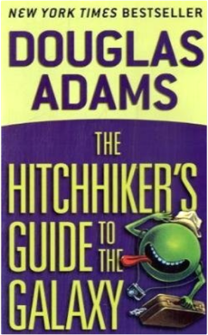Douglas Adams"IRRESISTIBLE!" —The Boston Globe Seconds before the Earth is demolished to make way for a galactic freeway, Arthur Dent is plucked off the planet by his friend Ford Prefect, a researcher for the revised edition of The Hitchhiker's Guide to the Galaxy who, for the last fifteen years, has been posing as an out-of-work actor. Together this dynamic pair begin a journey through space aided by quotes from The Hitchhiker's Guide ("A towel is about the most massively useful thing an interstellar hitchhiker can have") and a galaxy-full of fellow travelers: Zaphod Beeblebrox—the two-headed, three-armed ex-hippie and totally out-to-lunch president of the galaxy; Trillian, Zaphod's girlfriend (formally Tricia McMillan), whom Arthur tried to pick up at a cocktail party once upon a time zone; Marvin, a paranoid, brilliant, and chronically depressed robot; Veet Voojagig, a former graduate student who is obsessed with the disappearance of all the ballpoint pens he bought over the years. Where are these pens? Why are we born? Why do we die? Why do we spend so much time between wearing digital watches? For all the answers stick your thumb to the stars. And don't forget to bring a towel! "[A] WHIMSICAL ODYSSEY...Characters frolic through the galaxy with infectious joy." —Publishers Weekly The Dilbert Principle: A Cubicle's-Eye View of Bosses, Meetings, Management Fads & Other Workplace Afflictions 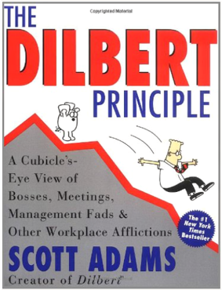Scott AdamsThe creator of Dilbert, the fastest-growing comic strip in the nation (syndicated in nearly 1000 newspapers), takes a look at corporate America in all its glorious lunacy. Lavishly illustrated with Dilbert strips, these hilarious essays on incompetent bosses, management fads, bewildering technological changes and so much more, will make anyone who has ever worked in an office laugh out loud in recognition. The Dilbert Principle: The most ineffective workers will be systematically moved to the place where they can do the least damage — management. Since 1989, Scott Adams has been illustrating this principle each day, lampooning the corporate world through Dilbert, his enormously popular comic strip. In Dilbert, the potato-shaped, abuse-absorbing hero of the strip, Adams has given voice to the millions of Americans buffeted by the many adversities of the workplace. Now he takes the next step, attacking corporate culture head-on in this lighthearted series of essays. Packed with more than 100 hilarious cartoons, these 25 chapters explore the zeitgeist of ever-changing management trends, overbearing egos, management incompetence, bottomless bureaucracies, petrifying performance reviews, three-hour meetings, the confusion of the information superhighway and more. With sharp eyes, and an even sharper wit, Adams exposes — and skewers — the bizarre absurdities of everyday corporate life. Readers will be convinced that he must be spying on their bosses, The Dilbert Principle rings so true! Pride and Prejudice 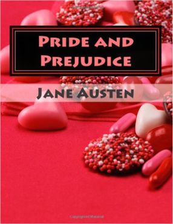Jane AustenPride and Prejudice is a novel by Jane Austen, first published in 1813. The story follows the main character Elizabeth Bennet as she deals with issues of manners, upbringing, morality, education, and marriage in the society of the landed gentry of early 19th-century England. Elizabeth is the second of five daughters of a country gentleman living near the fictional town of Meryton in Hertfordshire, near London. Abarat 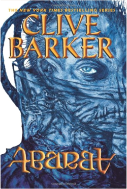Clive BarkerA journey beyond imaginationis about to unfold. . . . It begins in the most boring place in the world: Chickentown, USA. There lives Candy Quackenbush, her heart bursting for some clue as to what her future might hold. When the answer comes, it’s not one she expects. Welcome to the Abarat, a vast archipelago where every island is a different hour of the day. Candy has a place in this extraordinary land: She is here to help save the Abarat from the dark forces that are stirring at its heart—forces older than Time itself, and more evil than anything Candy has ever encountered. She’s a strange heroine, she knows. But this is a strange world. And in the Abarat, all things are possible. Planet of the Apes 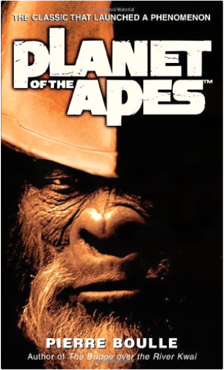Pierre BoulleBefore you see the movie, read the original novel! First published more than thirty-five years ago, Pierre Boulle’s chilling novel launched one of the greatest science fiction sagas in motion picture history, from the classic 1968 movie starring Charlton Heston and Roddy McDowell, through four sequels and two television series . . . and now the newest film adaptation directed by Tim Burton. In the not-too-distant future, three astronauts land on what appears to be a planet just like Earth, with lush forests, a temperate climate, and breathable air. But while it appears to be a paradise, nothing is what it seems. They soon discover the terrifying truth: On this world humans are savage beasts, and apes rule as their civilized masters. In an ironic novel of nonstop action and breathless intrigue, one man struggles to unlock the secret of a terrifying civilization, all the while wondering: Will he become the savior of the human race, or the final witness to its damnation? In a shocking climax that rivals that of the original movie, Boulle delivers the answer in a masterpiece of adventure, satire, and suspense. Fahrenheit 451: A Novel 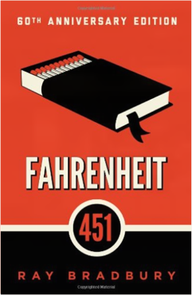Ray BradburyRay Bradbury’s internationally acclaimed novel Fahrenheit 451 is a masterwork of twentieth-century literature set in a bleak, dystopian future. Guy Montag is a fireman. In his world, where television rules and literature is on the brink of extinction, firemen start fires rather than put them out. His job is to destroy the most illegal of commodities, the printed book, along with the houses in which they are hidden. Montag never questions the destruction and ruin his actions produce, returning each day to his bland life and wife, Mildred, who spends all day with her television “family.” But then he meets an eccentric young neighbor, Clarisse, who introduces him to a past where people didn’t live in fear and to a present where one sees the world through the ideas in books instead of the mindless chatter of television. When Mildred attempts suicide and Clarisse suddenly disappears, Montag begins to question everything he has ever known. He starts hiding books in his home, and when his pilfering is discovered, the fireman has to run for his life. Angels & Demons 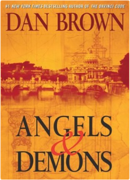Dan BrownFrom the #1 New York Times bestselling author of The Da Vinci Code comes the explosive thriller that started it all. An ancient secret brotherhood. A devastating new weapon of destruction. An unthinkable target. When world-renowned Harvard symbologist Robert Langdon is summoned to his first assignment to a Swiss research facility to analyze a mysterious symbol — seared into the chest of a murdered physicist — he discovers evidence of the unimaginable: the resurgence of an ancient secret brotherhood known as the Illuminati...the most powerful underground organization ever to walk the earth. The Illuminati has now surfaced to carry out the final phase of its legendary vendetta against its most hated enemy — the Catholic Church. Langdon's worst fears are confirmed on the eve of the Vatican's holy conclave, when a messenger of the Illuminati announces they have hidden an unstoppable time bomb at the very heart of Vatican City. With the countdown under way, Langdon jets to Rome to join forces with Vittoria Vetra, a beautiful and mysterious Italian scientist, to assist the Vatican in a desperate bid for survival. Embarking on a frantic hunt through sealed crypts, dangerous catacombs, deserted cathedrals, and the most secretive vault on earth, Langdon and Vetra follow a 400-year-old trail of ancient symbols that snakes across Rome toward the long-forgotten Illuminati lair...a clandestine location that contains the only hope for Vatican salvation. Critics have praised the exhilarating blend of relentless adventure, scholarly intrigue, and cutting wit found in Brown's remarkable thrillers featuring Robert Langdon. An explosive international suspense, Angels & Demons marks this hero's first adventure as it careens from enlightening epiphanies to dark truths as the battle between science and religion turns to war. Love is a Dog From Hell 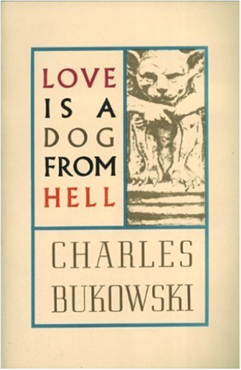Charles BukowskiFirst published in 1977, Love Is a Dog from Hell is a collection of Bukowski's poetry from the mid-seventies. A classic in the Bukowski canon, Love Is a Dog from Hell is a raw, lyrical, exploration of the exigencies, heartbreaks, and limits of love. A Clockwork Orange 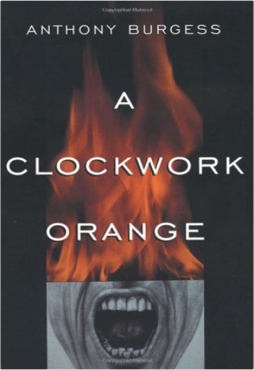Anthony BurgessThe only American edition of the cult classic novel. A vicious fifteen-year-old droog is the central character of this 1963 classic. In Anthony Burgess's nightmare vision of the future, where the criminals take over after dark, the story is told by the central character, Alex, who talks in a brutal invented slang that brilliantly renders his and his friends' social pathology. A Clockwork Orange is a frightening fable about good and evil, and the meaning of human freedom. When the state undertakes to reform Alex to "redeem" him, the novel asks, "At what cost?" This edition includes the controversial last chapter not published in the first edition and Burgess's introduction "A Clockwork Orange Resucked." Breakfast at Tiffany's 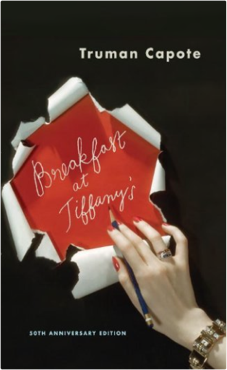Truman CapoteIn this seductive, wistful masterpiece, Truman Capote created a woman whose name has entered the American idiom and whose style is a part of the literary landscape. Holly Golightly knows that nothing bad can ever happen to you at Tiffany's; her poignancy, wit, and naïveté continue to charm. This volume also includes three of Capote's best-known stories, “House of Flowers,” “A Diamond Guitar,” and “A Christmas Memory,” which the Saturday Review called “one of the most moving stories in our language.” It is a tale of two innocents—a small boy and the old woman who is his best friend—whose sweetness contains a hard, sharp kernel of truth. Alice in Wonderland 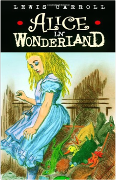Lewis CarrollAlice In Wonderland - The Classic by Lewis Carroll The Hunger Games 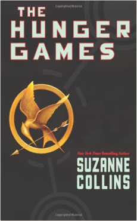Suzanne CollinsIn the ruins of a place once known as North America lies the nation of Panem, a shining Capitol surrounded by twelve outlying districts. Long ago the districts waged war on the Capitol and were defeated. As part of the surrender terms, each district agreed to send one boy and one girl to appear in an annual televised event called, "The Hunger Games," a fight to the death on live TV. Sixteen-year-old Katniss Everdeen, who lives alone with her mother and younger sister, regards it as a death sentence when she is forced to represent her district in the Games. The terrain, rules, and level of audience participation may change but one thing is constant: kill or be killed. The Name of the Rose 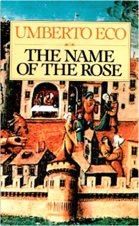Umberto EcoIt is the year 1327. Franciscans in an Italian abbey are suspected of heresy, but Brother William of Baskerville’s investigation is suddenly overshadowed by seven bizarre deaths. Translated by William Weaver. A Helen and Kurt Wolff Book This e-book includes a sample chapter of PRAGUE CEMETERY. The Great Gatsby 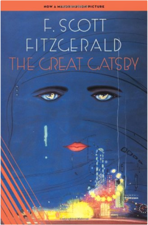F. Scott FitzgeraldThe Great Gatsby, F. Scott Fitzgerald’s third book, stands as the supreme achievement of his career. This exemplary novel of the Jazz Age has been acclaimed by generations of readers. The story of the fabulously wealthy Jay Gatsby and his love for the beautiful Daisy Buchanan, of lavish parties on Long Island at a time when The New York Times noted “gin was the national drink and sex the national obsession,” it is an exquisitely crafted tale of America in the 1920s. The Great Gatsby is one of the great classics of twentieth-century literature. Everything Is Illuminated: A Novel 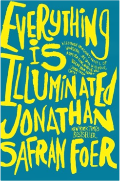Jonathan Safran FoerWith only a yellowing photograph in hand, a young man - also named Jonathan Safran Foer - sets out to find the woman who may or may not have saved his grandfather from the Nazis. Accompanied by an old man haunted by memories of the war; an amorous dog named Sammy Davis, Junior, Junior; and the unforgettable Alex, a young Ukrainian translator who speaks in a sublimely butchered English, Jonathan is led on a quixotic journey over a devastated landscape and into an unexpected past. The Corrections: A Novel 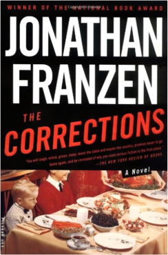Jonathan FranzenWinner of the 2001 National Book Award for Fiction After almost fifty years as a wife and mother, Enid Lambert is ready to have some fun. Unfortunately, her husband, Alfred, is losing his sanity to Parkinson's disease, and their children have long since flown the family nest to the catastrophes of their own lives. The oldest, Gary, a once-stable portfolio manager and family man, is trying to convince his wife and himself, despite clear signs to the contrary, that he is not clinically depressed. The middle child, Chip, has lost his seemingly secure academic job and is failing spectacularly at his new line of work. And Denise, the youngest, has escaped a disastrous marriage only to pour her youth and beauty down the drain of an affair with a married man-or so her mother fears. Desperate for some pleasure to look forward to, Enid has set her heart on an elusive goal: bringing her family together for one last Christmas at home. The Graveyard Book 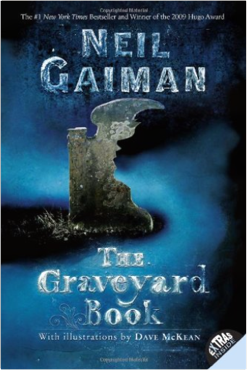Neil GaimanIt takes a graveyard to raise a child. Nobody Owens, known as Bod, is a normal boy. He would be completely normal if he didn't live in a graveyard, being raised by ghosts, with a guardian who belongs to neither the world of the living nor the dead. There are adventures in the graveyard for a boy—an ancient Indigo Man, a gateway to the abandoned city of ghouls, the strange and terrible Sleer. But if Bod leaves the graveyard, he will be in danger from the man Jack—who has already killed Bod's family. Lord of the Flies 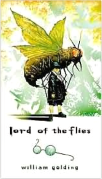William GoldingClassic in 20th century literature. The Kite Runner 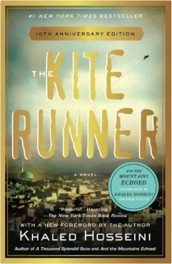Khaled HosseiniThe 10th anniversary edition of the New York Times bestseller and international classic loved by millions of readers. The unforgettable, heartbreaking story of the unlikely friendship between a wealthy boy and the son of his father's servant, The Kite Runner is a beautifully crafted novel set in a country that is in the process of being destroyed. It is about the power of reading, the price of betrayal, and the possibility of redemption; and an exploration of the power of fathers over sons—their love, their sacrifices, their lies. A sweeping story of family, love, and friendship told against the devastating backdrop of the history of Afghanistan over the last thirty years, The Kite Runner is an unusual and powerful novel that has become a beloved, one-of-a-kind classic. Brave New World 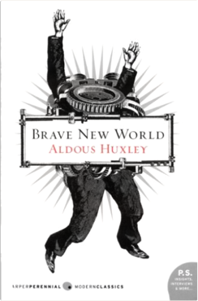Aldous Huxley"Aldous Huxley is the greatest 20th century writer in English." —Chicago Tribune Aldous Huxley is rightly considered a prophetic genius and one of the most important literary and philosophical voices of the 20th Century, and Brave New World is his masterpiece. From the author of The Doors of Perception, Island, and countless other works of fiction, non-fiction, philosophy, and poetry, comes this powerful work of speculative fiction that has enthralled and terrified readers for generations. Brave New World remains absolutely relevant to this day as both a cautionary dystopian tale in the vein of the George Orwell classic 1984, and as thought-provoking, thoroughly satisfying entertainment. It 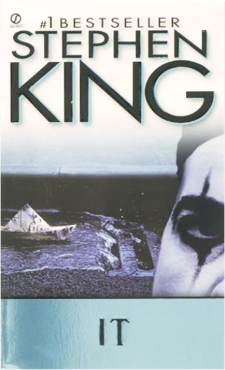Stephen KingThey were just kids when they stumbled upon the horror within their hometown. Now, as adults, none of them can withstand the force that has drawn them all back to Derry, Maine, to face the nightmare without end, and the evil without a name... To Kill a Mockingbird 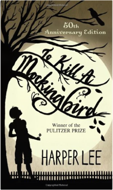Harper LeeThe unforgettable novel of a childhood in a sleepy Southern town and the crisis of conscience that rocked it, To Kill A Mockingbird became both an instant bestseller and a critical success when it was first published in 1960. It went on to win the Pulitzer Prize in 1961 and was later made into an Academy Award-winning film, also a classic. Compassionate, dramatic, and deeply moving, To Kill A Mockingbird takes readers to the roots of human behavior - to innocence and experience, kindness and cruelty, love and hatred, humor and pathos. Now with over 18 million copies in print and translated into forty languages, this regional story by a young Alabama woman claims universal appeal. Harper Lee always considered her book to be a simple love story. Today it is regarded as a masterpiece of American literature. Life of Pi 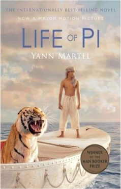Yann MartelOnly one lifeboat survived the sinking of the Japanese freighter heart of the Pacific Ocean. The boat crammed five survivors: Orange - an orangutan, hyena, a zebra with a broken leg, a huge Bengal tiger named Richard Parker and Pi Patel, an Indian boy was 16. This little boat is the main setting of this wonderful novel, whose power could light a reader faith in God, as one of the heroes. What else can the reader ask himself? Faye life is outstanding literary work narrated in a rare and wonderful talent. Yann Martel, son of diplomats, grew up in Costa Rica, France, Mexico, Alaska and Canada, and as an adult lived in Iran, Turkey and India. He studied philosophy at Trent, and at age 27 took time to write. ,pi life is his third novel. No Country for Old Men 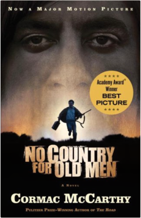Cormac McCarthyIn No Country for Old Men, Cormac McCarthy simultaneously strips down the American crime novel and broadens its concerns to encompass themes as ancient as the Bible and as bloodily contemporary as this morning’s headlines. V for Vendetta Alan MooreA new trade paperback edition of the graphic novel that inspired the hit movie! A powerful story about loss of freedom and individuality, V FOR VENDETTA takes place in a totalitarian England following a devastating war that changed the face of the planet. In a world without political freedom, personal freedom and precious little faith in anything comes a mysterious man in a white porcelain mask who fights political oppressors through terrorism and seemingly absurd acts. It's a gripping tale of the blurred lines between ideological good and evil. This new trade paperbackedition features the improved production values and coloring from the 2005 hardcover. Kafka on the Shore 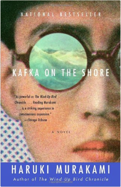Haruki MurakamiKafka on the Shore is powered by two remarkable characters: a teenage boy, Kafka Tamura, who runs away from home either to escape a gruesome oedipal prophecy or to search for his long-missing mother and sister; and an aging simpleton called Nakata, who never recovered from a wartime affliction and now is drawn toward Kafka for reasons that, like the most basic activities of daily life, he cannot fathom. As their paths converge, and the reasons for that convergence become clear, Haruki Murakami enfolds readers in a world where cats talk, fish fall from the sky, and spirits slip out of their bodies to make love or commit murder. Kafka on the Shore displays one of the world’s great storytellers at the peak of his powers. 1984 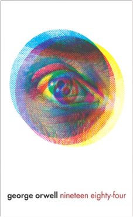George OrwellIn 1984, London is a grim city where Big Brother is always watching you and the Thought Police can practically read your mind. Winston is a man in grave danger for the simple reason that his memory still functions. Drawn into a forbidden love affair, Winston finds the courage to join a secret revolutionary organization called The Brotherhood, dedicated to the destruction of the Party. Together with his beloved Julia, he hazards his life in a deadly match against the powers that be. The Carpet People 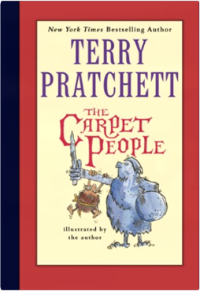Terry PratchettIn the beginning, there was nothing but endless flatness. Then came the Carpet . . . That’s the old story everyone knows and loves. But now the Carpet is home to many different tribes and peoples, and there’s a new story in the making. The story of Fray, sweeping a trail of destruction across the Carpet. The story of power-hungry mouls—and of two brothers who set out on an adventure to end all adventures when their village is flattened. It’s a story that will come to a terrible end—if someone doesn't do something about it. If everyone doesn’t do something about it . . . First published in 1971, this hilarious and wise novel marked the debut of the phenomenal Sir Terry Pratchett. Years later, Sir Terry revised the work, and this special collectable edition includes the updated text, his original color and black-and-white illustrations, and an exclusive story—a forerunner to The Carpet People created by the seventeen-year-old nascent writer who would become one of the world's most beloved storytellers. Harry Potter and the Sorcerer's Stone 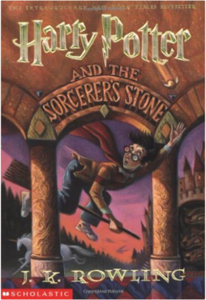J.K. RowlingHarry Potter has no idea how famous he is. That's because he's being raised by his miserable aunt and uncle who are terrified Harry will learn that he's really a wizard, just as his parents were. But everything changes when Harry is summoned to attend an infamous school for wizards, and he begins to discover some clues about his illustrious birthright. From the surprising way he is greeted by a lovable giant, to the unique curriculum and colorful faculty at his unusual school, Harry finds himself drawn deep inside a mystical world he never knew existed and closer to his own noble destiny. The Little Prince 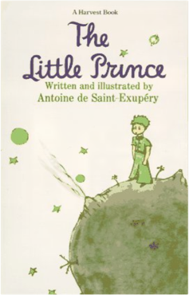Antoine de Saint-ExupéryA lovely story....which covers a poetic, yearning philosophy—not the sort of fable that can be tacked down neatly at its four corners but rather reflections on what are real matters of consequence. —The New York Times Book Review. The Catcher in the Rye 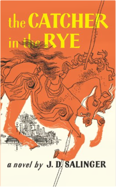J.D. SalingerAnyone who has read J.D. Salinger's New Yorker stories ? particularly A Perfect Day for Bananafish, Uncle Wiggily in Connecticut, The Laughing Man, and For Esme ? With Love and Squalor, will not be surprised by the fact that his first novel is fully of children. The hero-narrator of THE CATCHER IN THE RYE is an ancient child of sixteen, a native New Yorker named Holden Caulfield. Through circumstances that tend to preclude adult, secondhand description, he leaves his prep school in Pennsylvania and goes underground in New York City for three days. The boy himself is at once too simple and too complex for us to make any final comment about him or his story. Perhaps the safest thing we can say about Holden is that he was born in the world not just strongly attracted to beauty but, almost, hopelessly impaled on it. There are many voices in this novel: children's voices, adult voices, underground voices-but Holden's voice is the most eloquent of all. Transcending his own vernacular, yet remaining marvelously faithful to it, he issues a perfectly articulated cry of mixed pain and pleasure. However, like most lovers and clowns and poets of the higher orders, he keeps most of the pain to, and for, himself. The pleasure he gives away, or sets aside, with all his heart. It is there for the reader who can handle it to keep. Romeo and Juliet 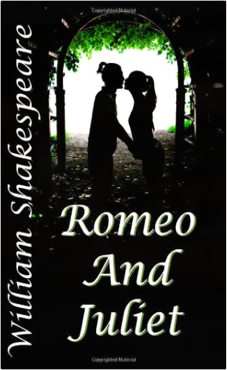William ShakespeareRomeo and Juliet is one of William Shakespeare's classic romantic tragedies. This version is a reprint of the original play. Quicksilver 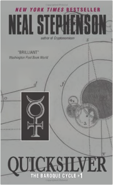Neal StephensonIn which Daniel Waterhouse, fearless thinker and courageous Puritan, pursues knowledge in the company of the greatest minds of Baroque-era Europe — in a chaotic world where reason wars with the bloody ambitions of the mighty, and where catastrophe, natural or otherwise, can alter the political landscape overnight. The Hobbit 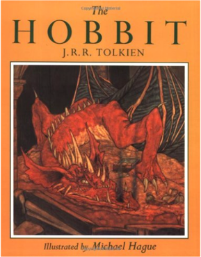J.R.R. Tolkien Slaughterhouse-Five 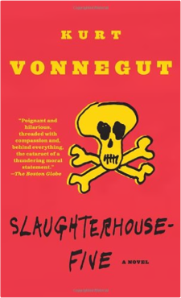Kurt VonnegutSlaughterhous-Five is one of the world's great anti-war books. Centering on the infamous fire-bombing of Dresden, Billy Pilgrim's odyssey through time reflects the mythic journey of our own fractured lives as we search for meaning in what we are afraid to know. |
Demo Library
Gesamt: 55 Artikel
Letztes Update: Jan 10, 2014
 Made with Delicious Library
Made with Delicious Library